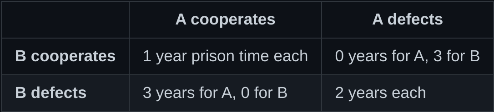

Goal
The goal of this contest is to write a python function that takes in a string that contains the opponent's source code, and returns either 'cooperate' or 'defect'. You can use this template as a starting point for your code. This is a question from open source game theory, where open source refers to the fact that the opponent's source code is open, and game theory is the study of interactions between agents, like the one you'll write. This problem is derived from a classic problem in game theory - Prisoners' dilemma. For a more thorough description of the problem, we encourage you to read the sections below.
The Prisoner's Dilemma
There is a famous example in game theory, where two prisoners are
arrested, and given two options - stay silent, or betray the other
prisoner. If both of them stay silent (i.e., cooperate with each
other), they get 1 year of prison time each. If either of them
betrays the other (i.e., defects), the defector can go free, but the
prisoner who stays silent gets 3 years. If both of them betray each
other, they get 2 years each.
Here's a table of the possible options and outcomes:

We can see that in any case except the one where both of them defect, one can get a better outcome by defecting instead of cooperating. So, a rational individual will always defect, which means at equilibrium (a point where no-one can take an action that can improve the situation for themselves), both of them will get 2 years each in prison. This video about Prisoners' dilemma and Nash equilibrium is a good introduction to this if you aren't already familiar.
Open source game theory